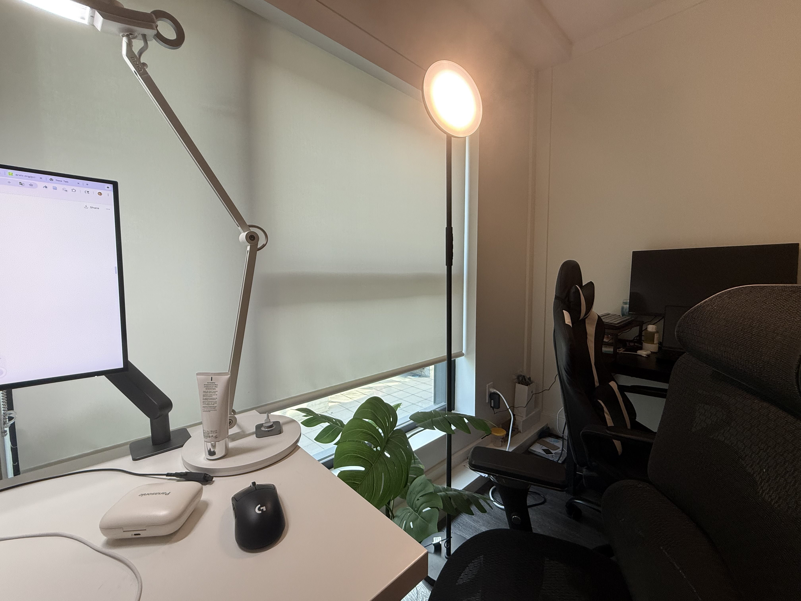
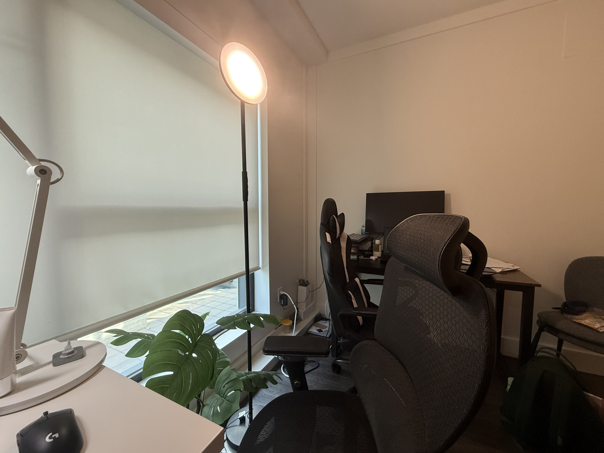
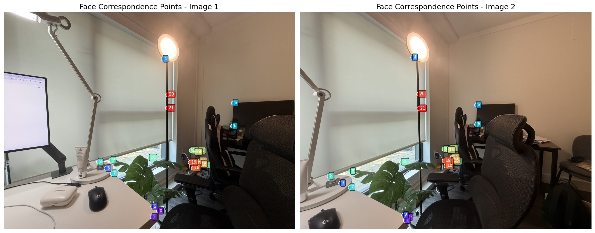
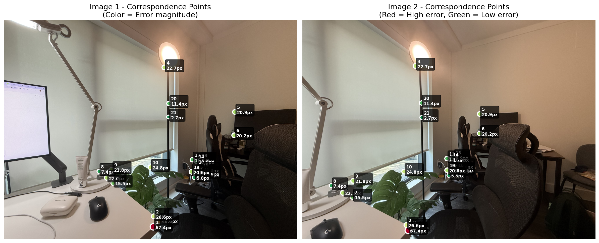
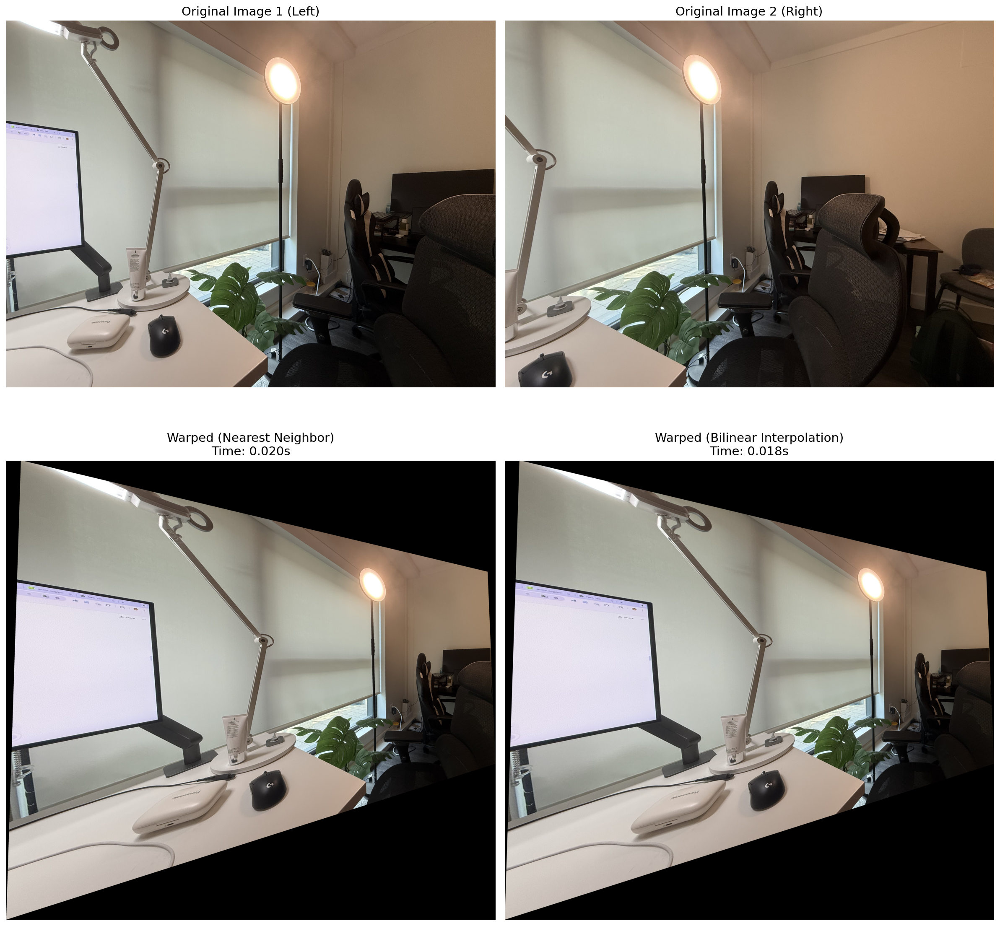
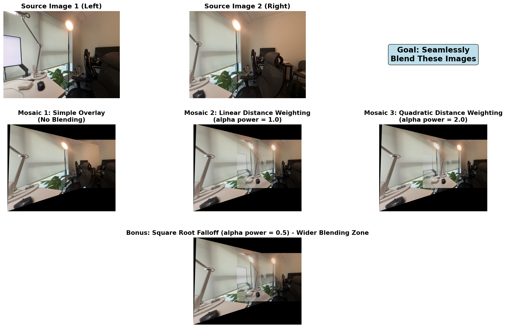
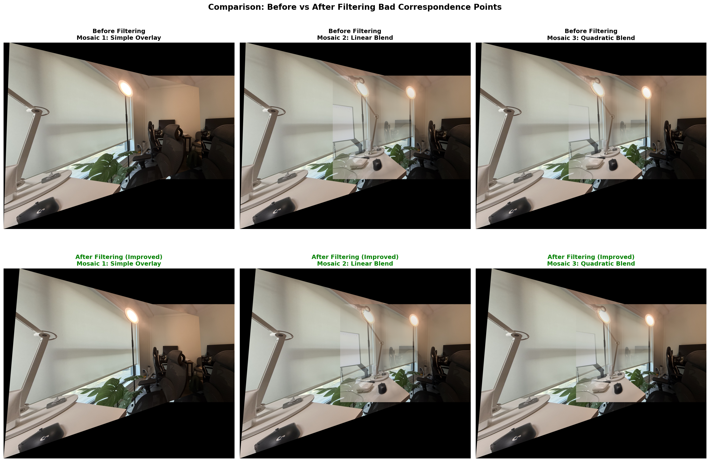
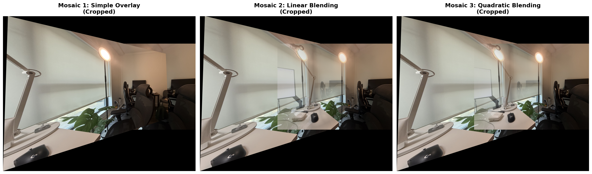

This project explores image warping and panorama creation through two approaches. Part A builds the foundation with manual correspondence selection and homography-based stitching. Part B automates the pipeline using Harris corner detection, feature descriptors, and RANSAC, demonstrating how computer vision algorithms can replace manual labor while highlighting the importance of proper photo capture.
Project Overview
Part A: Image Warping and Mosaicing
Manual correspondence selection and homography-based stitching
A.1: Shooting the Pictures
I photographed a desk scene from two viewpoints with ~50% overlap. The images contain depth variation (desk items vs wall), which violates homography assumptions but provides insight into the limitations of projective transformations.


A.2: Recovering Homographies
I manually selected 22 correspondence points on distinctive features visible in both images. The homography H is computed by solving Ah=b using least squares, where each point pair provides two equations. Initial alignment showed high errors (avg 18.6px, max 67.4px), so I filtered outliers above 30px threshold, keeping 18 reliable points.


A.3: Warping the Images
Image warping uses inverse mapping: for each output pixel, apply H^(-1) to find the source location, then interpolate. I compared nearest neighbor (fast, blocky) with bilinear interpolation (smooth, slower). Bilinear produces significantly better quality with acceptable performance.

A.4: Image Mosaicing and Blending
Simple overlay creates visible seams. I implemented distance-weighted blending using alpha channels from distance transforms. Three strategies: (1) no blending (visible seam), (2) linear weighting (smooth but ghosting), (3) quadratic weighting (reduced ghosting). Filtering high-error correspondences improved alignment significantly.



Part B: Feature Matching for Autostitching
Automatic feature detection and RANSAC-based alignment
B.1-A: Harris Corner Detection
I used Harris corner detector to find interest points where intensity changes significantly in multiple directions. After filtering weak corners and discarding edge pixels, I got ~1000-2500 corners per image concentrated around textured objects.


B.1-B: Adaptive Non-Maximal Suppression (ANMS)
Too many corners creates redundancy. ANMS selects 500 well-distributed corners by computing suppression radii - the distance to the nearest stronger corner. We keep corners with largest radii, ensuring good spatial coverage instead of dense clusters.

B.2: Feature Descriptors
For each corner, I extract a 40×40 patch, apply Gaussian blur, downsample to 8×8, and z-score normalize. This creates a 64D descriptor that's invariant to brightness/contrast changes while capturing local texture patterns.

B.3: Feature Matching
I match descriptors using Lowe's ratio test. For each left descriptor, find two nearest neighbors in right image. Accept match only if ratio (closest/second-closest) < 0.75. This filters ambiguous matches, giving 60-100 high-quality matches with good photos.


B.4: RANSAC + Automatic Stitching
Even with Lowe's test, some matches are wrong. RANSAC handles outliers by repeatedly sampling 4 random matches, computing homography, and counting inliers. After many iterations, we keep the best model and refine using all inliers. Good photos yield 60-80% inliers, bad photos get <10%.


Success vs Failure: Photo Quality Matters
What went wrong initially: First attempt used photos where overlap was mostly flat walls with no texture. Feature detector found wall "corners" that were just noise, leading to 95% wrong matches. RANSAC failed completely, producing severe distortion.
The fix: Re-shot photos focusing on desk area with textured objects (monitor, frame, papers). Now overlap contains distinctive features that match reliably. Inlier rate jumped from 5% to 80%, making automatic stitching work.

Flat wall overlap produces diagonal/crossed match lines - almost all wrong.

Only 4 good points from 69 matches - unreliable homography.

Bad homography creates extreme warping. Automatic stitching fails without proper photos.
Key Lessons
1. Overlap needs texture: Flat walls don't provide distinctive features. Need objects with corners, edges, patterns.
2. Scene content > algorithm tuning: No parameter adjustment fixes bad input photos. Good capture technique matters more than perfect implementation.
3. RANSAC needs good matches: With >90% outliers, RANSAC struggles. With >60% inliers, RANSAC works reliably.
Implementation Notes
Part A Challenges: Parallax from camera translation caused ghosting that no blending strategy could fully eliminate. Outlier filtering (30px threshold) helped significantly. Quadratic weighting provided best ghosting/smoothness tradeoff.
Part B Challenges: 4032×3024 images were too slow - resized to 1000px. ANMS computation is O(N²) but manageable. Initial ratio threshold 0.6 gave too few matches (30); standard 0.75 worked better (60-100). Used Part A's computeH (DLT with Ah=b, h[2,2]=1) instead of SVD - more stable.
What I Learned: Proper photo capture is crucial - homographies work for planar scenes or pure rotation, not general 3D translation. For Part A, tripod with rotating head would eliminate parallax. For Part B, textured overlap regions enable reliable feature matching. Scene content quality determines algorithm success more than parameter tuning.
Coolest Thing I Learned
The coolest thing I learned is how automatic feature matching can replicate manual work - but only with proper input. Part A required tedious manual point selection, while Part B does everything automatically. However, the dramatic difference between success (80% inliers with textured objects) and failure (5% inliers with flat walls) taught me that computer vision algorithms aren't magic - they need the right scene content to work. It's fascinating how RANSAC can filter outliers reliably when given quality matches, but completely fails when most matches are wrong. This project showed me that understanding algorithm assumptions and capture requirements is just as important as implementation.